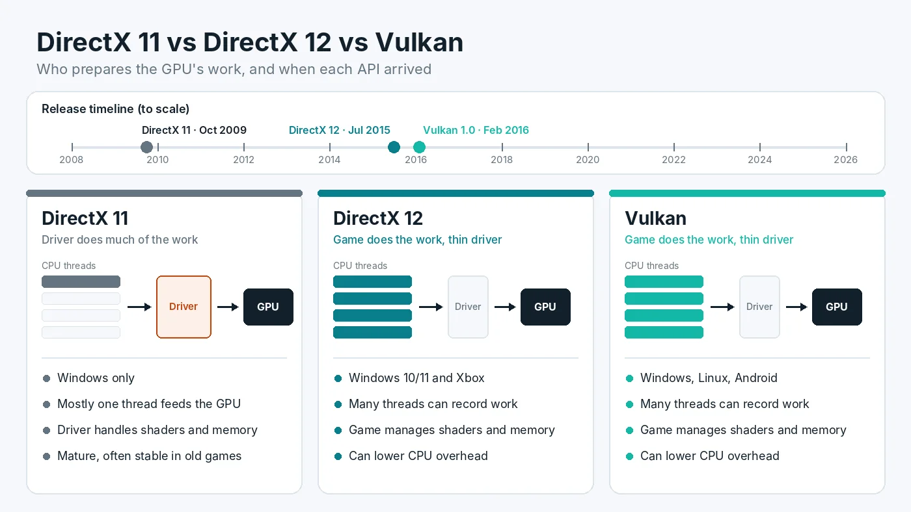

DirectX 11 vs DirectX 12 vs Vulkan: Which Gives More FPS?
Many PC games let you choose between DirectX 11, DirectX 12 and sometimes Vulkan, usually with no explanation of what the choice does. The option can matter, because these graphics APIs split work between the game, the driver and the CPU in different ways. On a PC held back by its processor, the right choice can raise FPS. On another PC, the same switch can add stutter. This guide explains how the three APIs differ, when each one tends to win, and how to test them on your own system in a few minutes.

What a Graphics API Actually Does
A graphics API is the language a game uses to tell your graphics card what to draw. Every frame, the game sends thousands of instructions: which objects to draw, which textures and shaders to use, and where everything sits on screen. Each of these requests is often called a draw call.
The CPU prepares those instructions, and the graphics driver translates them into commands the GPU understands. How much of that work happens in the driver, and how many CPU threads can share it, is the main difference between the APIs. That is why the choice affects the CPU side of performance much more than the GPU side.
DirectX 11: The Driver Does the Heavy Lifting
DirectX 11 arrived in 2009. It is a higher-level API, which means the driver handles a lot of work behind the scenes, such as managing video memory and keeping track of resources. That makes games easier to build, and after many years of driver updates, DirectX 11 is mature and predictable.
The downside is overhead. In most DirectX 11 games, much of the work of feeding the GPU runs on one main thread, and the driver adds its own processing on top. When a scene has many objects, that thread can become the limit even while other CPU cores sit partly idle. The result is a classic CPU bottleneck: GPU usage drops, and FPS stops rising no matter how low you set the graphics. If you are not sure whether that is happening on your PC, first confirm whether your processor or graphics card sets the frame rate.
DirectX 12 and Vulkan: The Game Takes Control
DirectX 12 launched with Windows 10 in 2015, and Vulkan 1.0 followed in early 2016. Both are low-level APIs. Microsoft describes Direct3D 12 as giving a lower level of hardware abstraction than earlier versions, with much lower CPU overhead and a design that makes full use of multithreading. Vulkan, maintained by the Khronos Group, follows the same idea and runs on Windows, Linux and Android.
In practice this means two things:
- Less driver overhead. The driver does less guesswork, so each draw call costs less CPU time.
- Work spread across threads. The game can prepare GPU commands on several CPU threads at once instead of pushing almost everything through one.
The trade-off is responsibility. With DirectX 12 and Vulkan, the game itself must manage memory, synchronization and shader compilation, jobs the DirectX 11 driver used to handle. A well-built game uses that freedom to run faster. A rushed one can end up slower or less stable than its DirectX 11 version.
When DirectX 12 or Vulkan Usually Helps
The newer APIs tend to make the biggest difference in these situations:
- CPU-limited systems. An older or lower-end processor paired with a faster graphics card often gains the most, because lower overhead frees up CPU time.
- Busy scenes. Large cities, crowded multiplayer matches and strategy games with many units produce lots of draw calls, which is where DirectX 11 overhead hurts most.
- Low resolutions and high refresh rates. At 1080p with competitive settings, the CPU is more likely to be the limit, so cutting its workload can lift FPS.
- Games built around the new API. Titles designed for DirectX 12 or Vulkan from the start, rather than ported later, usually run best on that API.
- Newer features. Ray tracing and some modern upscaling and frame generation options are typically only offered in the DirectX 12 or Vulkan mode of a game.
When DirectX 11 Can Still Be the Better Choice
Newer is not automatically faster. DirectX 11 can come out ahead in several cases:
- GPU-limited systems. If your graphics card already runs near full load, reducing CPU overhead does little. The API makes only a small difference to how fast the GPU itself renders, so results are often close.
- Shader stutter. DirectX 12 and Vulkan games compile shaders under the game's control. If a game does not prepare them in advance, you can see sharp hitches the first time new effects appear. This is how shader compilation causes first-play hitches, and the DirectX 11 mode of the same game sometimes shows fewer of them.
- Weak DirectX 12 ports. Some games added DirectX 12 late in development or as an experimental option. Those versions can have lower FPS, worse 1% lows or more crashes.
The low-latency settings in graphics drivers can also behave differently. Driver-level options mainly affect DirectX 11 titles, because DirectX 12 and Vulkan games manage their own frame queue. Our guide to driver low-latency settings and newer APIs covers how that works.
DirectX 12 vs Vulkan on Windows
When a game offers both DirectX 12 and Vulkan, the two are usually closer to each other than either is to DirectX 11. Both give the game the same kind of low-level control, so the winner depends mostly on which version the developer tuned better. In many games the gap between them is small.
Vulkan has a practical advantage outside Windows. On Linux and the Steam Deck, Proton translates many DirectX games to Vulkan, so a native Vulkan mode can avoid that translation step. On a Windows desktop, there is no rule that one is always faster, so treat them as two options worth testing.
How to Switch the Graphics API
Where the setting lives depends on the game:
- In-game settings. Check the graphics, video or advanced display menu for an option named Graphics API, Renderer or Rendering Mode. Most games need a restart before the change applies.
- The game's launcher. Some games show a small window before starting where you choose DirectX 11, DirectX 12 or Vulkan.
- Launch options. In Steam, right-click the game in your Library, open Properties, and type a command in the Launch Options box on the General tab. Commands such as
-dx11,-dx12or-vulkanwork in some games, but each game decides which commands it accepts, so check the developer's support pages first.
Fortnite is a good example of the variety: it offers DirectX 11, DirectX 12 and a lighter Performance mode, and Epic's help pages list launcher arguments for each one in case the in-game choice does not save.
How to Test Which API Is Faster on Your PC
Because results vary so much by game and hardware, a short test beats any general rule:
- Keep everything else the same. Use the same resolution, graphics preset, upscaling setting and background apps for every run.
- Pick a repeatable scene. A built-in benchmark is ideal. Otherwise, use the same 60-second route through a busy area.
- Play the scene once before measuring. On DirectX 12 and Vulkan, the first run can include shader compilation. Measure the second and third runs so you compare the API, not a one-time cache build.
- Record average FPS and 1% lows with an overlay or a capture tool, and watch GPU usage at the same time.
- Repeat with the other API and compare the middle result of three runs each.
Pay the most attention to 1% lows and how smooth the game feels, not only to the average. A mode with a slightly lower average but fewer spikes is often the better pick. Our notes on comparing 1% lows between test runs explain how to read those numbers.
GPU usage is a useful clue. If it rises noticeably after switching to DirectX 12 or Vulkan, the new API is freeing up the CPU. If it stays low in every mode, the limit may be elsewhere, such as an FPS cap or background load. In that case, work through the common reasons for a graphics card stuck well below full load.
Conclusion
DirectX 11, DirectX 12 and Vulkan all draw the same game, but they share the work between game, driver and CPU differently. DirectX 12 and Vulkan can lower CPU overhead and spread work across more threads, which helps most on CPU-limited PCs and in busy scenes. DirectX 11 still has a place when a game's newer mode stutters or is poorly optimized. The best choice is the one that gives steadier frame times in your own test. To see whether your CPU and GPU are evenly matched in the first place, try the free PC Bottleneck Calculator.
Frequently Asked Questions
Is DirectX 12 always faster than DirectX 11?
No. DirectX 12 can lower CPU overhead, so it often helps when the processor is the limit. When the graphics card is the limit, the two usually perform about the same, and in some games DirectX 11 has steadier frame times or fewer shader stutters. Test both in your own game.
Is Vulkan better than DirectX 12?
Neither is better in general. Both are low-level APIs that let the game control more of the work, so results depend on how well each game uses them. Pick whichever gives better 1% lows and fewer crashes in your own test.
Which API should I use with a weak CPU?
Try DirectX 12 or Vulkan first. They are designed to cut driver overhead and spread work across more threads, which tends to help most when the processor is holding back the frame rate. Keep the option that gives the higher and steadier result.
Why does DirectX 12 stutter more in some games?
Usually because of shader compilation. With DirectX 12 and Vulkan the game, not the driver, decides when shaders are built. Games that skip a proper precompile step can hitch the first time new effects appear. A finished precompile step or a later patch often reduces it.
How do I switch a game to DirectX 11, DirectX 12 or Vulkan?
Look in the game's graphics or display settings for an option called Graphics API, Renderer or Rendering Mode, then restart the game. Some games use a launcher setting or a launch option such as -dx11 or -dx12 instead. The exact name depends on the game.
Sources
Official documentation referenced in this guide: